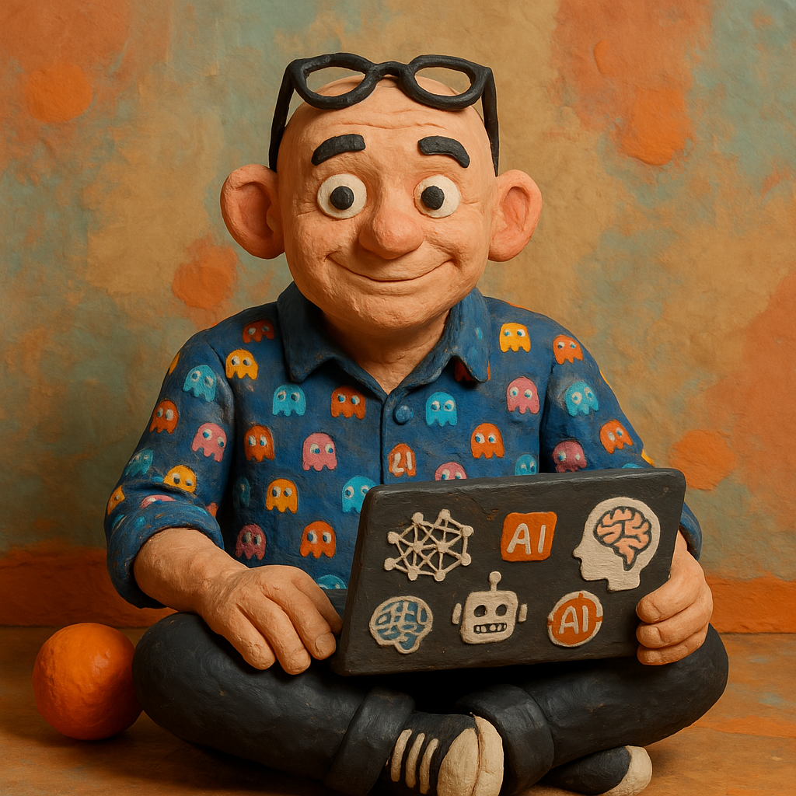
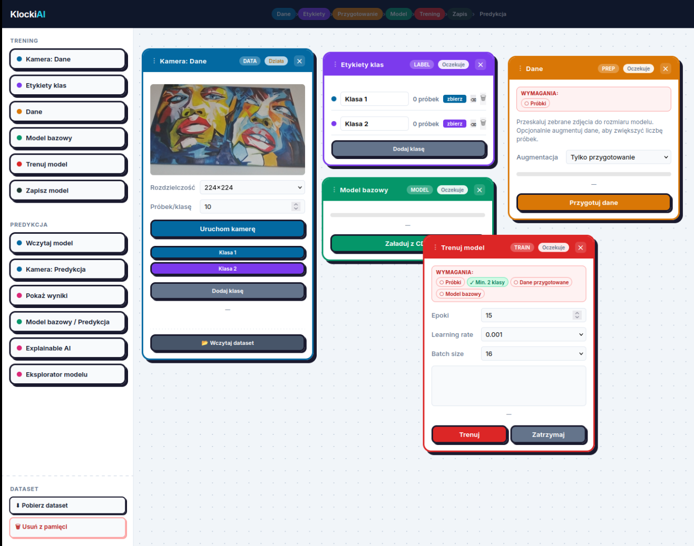

AI

AI W PRAKTYCE
Od strategii do wdrożenia. Sztuczna inteligencja w biznesie, administracji i edukacji.
Od strategii do wdrożenia. Sztuczna inteligencja w biznesie, administracji i edukacji.
Przez wiele lat byłem związany z firmą Intel, gdzie odpowiadałem za współpracę z europejskimi firmami rozwijającymi systemy AI.
Dziś prowadzę niezależną praktykę doradczą – pomagam firmom budować strategie AI i wdrażać rozwiązania dopasowane do realiów organizacji.
Jestem współtwórcą i prowadzącym zajęcia na Akademii Leona Koźmińskiego – studia podyplomowe Biznes.AI oraz Prawo Sztucznej Inteligencji.
Jestem współautorem raportu „Uczenie ustawiczne w zakresie sztucznej inteligencji" dla Ministerstwa Cyfryzacji.

Projektowanie strategii transformacji cyfrowej z wykorzystaniem sztucznej inteligencji.
Modele językowe, systemy generatywne i ich praktyczne zastosowania w organizacjach.
Wdrożenia AI dopasowane do realiów firmy – od audytu po produkcyjne rozwiązania.
Warsztaty i programy szkoleniowe dla kadry zarządzającej, zespołów technicznych i użytkowników końcowych.
Od 2018 roku projektuję i prowadzę szkolenia z AI. Pracowałem z wyższymi urzędnikami ministerstw, kadrą menedżerską, prawnikami, nauczycielami i studentami.
Akademia Leona Koźmińskiego – współtwórca i wykładowca trzech programów: Biznes.AI, Prawo Sztucznej Inteligencji oraz Szkoła IT dla Prawników.
Wielodniowe warsztaty AI dla kadry kierowniczej Ministerstwa Edukacji Narodowej, Ministerstwa Rozwoju i Technologii oraz organizacji Smart Africa.
Dedykowane programy szkoleniowe we współpracy z Asseco Data Systems, Think Tank, Koalicją na Rzecz Polskich Innowacji – dla branży produkcyjnej, doradczej, IT i logistycznej.
Warsztaty dla Okręgowej Izby Radców Prawnych w Łodzi oraz cykle edukacyjne dla prawników w ramach programów akademickich.
Szkolenia dla nauczycieli z wykorzystania AI w szkole – we współpracy z OEIiZK oraz Ministerstwem Edukacji Narodowej.
Przygotowuję i prowadzę szkolenia z zakresu sztucznej inteligencji dla firm na każdym etapie transformacji – od pierwszych kroków po wdrożenia produkcyjne. Program jest zawsze dostosowany do specyfiki organizacji.
Szkolenia kieruję do trzech grup: kadry zarządzającej podejmującej decyzje strategiczne, zespołów technicznych wdrażających rozwiązania AI oraz użytkowników końcowych pracujących z systemami AI.
Transformacja cyfrowa i gotowość firmy na AI, wybór i ocena rozwiązań, techniczne zasady działania modeli językowych, aspekty prawne – w tym AI Act i RODO.
Stacjonarnie lub zdalnie, od kilkugodzinnych warsztatów po wielodniowe programy. Każde szkolenie kończy się materiałami do pracy własnej i możliwością follow-upu.

Wytrenuj własny model rozpoznawania obrazów w przeglądarce – bez kodu, bez chmury.
workszop.org →Mobilna wersja KlockiAI. Smartfon jako laboratorium AI, w całości na urządzeniu.
mobi.workszop.org →BeeHonest to mała gra która pozwala się lepiej poznać.
beehonest.eu →Szukasz eksperta AI do konsultacji, szkolenia lub współpracy przy wdrożeniu?